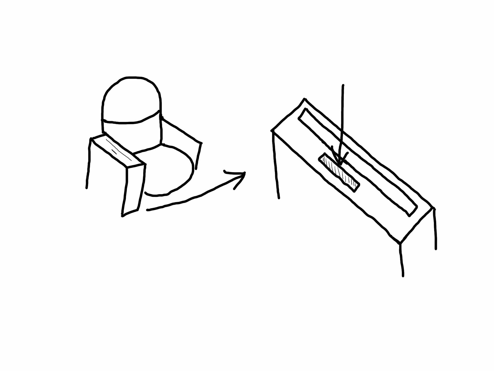

Intervention mid-level 02
Phone-for-Desk
Lecture hall seating that requires you to plug in your phone to make the desk appear
Other iterations: 09
Other iterations: 09

Lecture seats without desks have a slot for phones in the arm rest.

When a student inserts their phone, a desk pops up. To retrieve a phone, the student must return the desk.

End result: students aren't on their phones in lecture.
A student sits down. Since they are on their phone, they do not have access to the desk.
To get to the desk, they put their phone in the slot.
With their phone in the desk, the student has access to the desk.
Why it was selected
I chose to continue with this idea for two reasons: 1) It was a physical idea so it broke the digital barrier and 2) compared to some of my other ideas, this one was more focused on positive reinforcement.
Feedback
Unfortunately I was not able to get a lot of feedback on the prototype because the fidelity of the prototype did not result in realistic interactions.